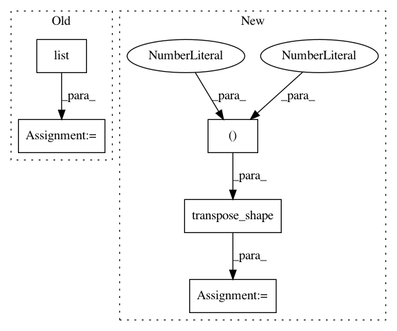

1068e173eafd15e5aa9f40b9f73590a7f5be4a84,keras/backend/cntk_backend.py,,conv3d_transpose,#Any#Any#Any#Any#Any#Any#,1675
Before Change
output_shape = output_shape[1:]
// in keras2, need handle output shape in different format
if data_format == "channels_last":
shape = list(output_shape)
shape[0] = output_shape[3]
shape[1] = output_shape[0]
shape[2] = output_shape[1]
shape[3] = output_shape[2]
After Change
output_shape = output_shape[1:]
// in keras2, need handle output shape in different format
if data_format == "channels_last":
output_shape = transpose_shape(output_shape, "channels_first",
spatial_axes=(0, 1, 2))
x = C.convolution_transpose(
kernel,
x,
In pattern: SUPERPATTERN
Frequency: 3
Non-data size: 5
Instances
Project Name: keras-team/keras
Commit Name: 1068e173eafd15e5aa9f40b9f73590a7f5be4a84
Time: 2018-08-05
Author: gabrieldemarmiesse@gmail.com
File Name: keras/backend/cntk_backend.py
Class Name:
Method Name: conv3d_transpose
Project Name: keras-team/keras
Commit Name: 1068e173eafd15e5aa9f40b9f73590a7f5be4a84
Time: 2018-08-05
Author: gabrieldemarmiesse@gmail.com
File Name: keras/backend/cntk_backend.py
Class Name:
Method Name: conv2d_transpose
Project Name: keras-team/keras
Commit Name: 1068e173eafd15e5aa9f40b9f73590a7f5be4a84
Time: 2018-08-05
Author: gabrieldemarmiesse@gmail.com
File Name: keras/backend/tensorflow_backend.py
Class Name:
Method Name: spatial_2d_padding